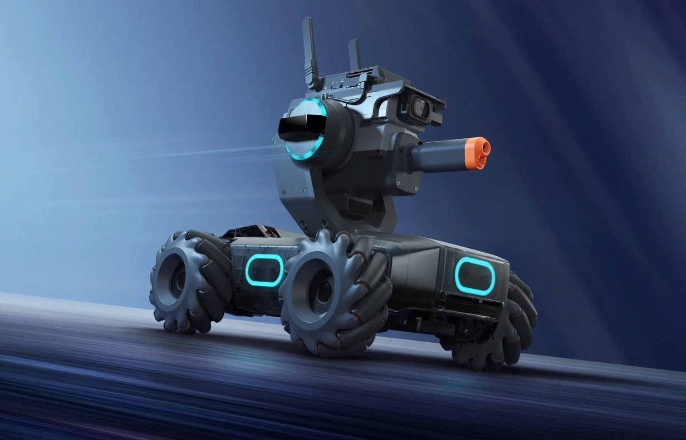

Durante loa años del curso se ha trabajado con el software Thonny para realizar los códigos los cuales son realizados en el lenguaje de programación Circuit Phyton
Se utiliza la tarjeta madre IdeaBoard de CRCibernética la cual cuenta con la capacidad de conectarse por medio de internet a la página de Adafruit para transmitir información
